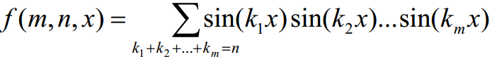

BZPRO
#5061. 密码
内存限制：256 MiB
时间限制：10 Sec
提交
提交记录
讨论
题目描述
经过多番打探，小奇得知大科学家打算出门旅行，而他的旅行计划保存在他的电脑中。小奇偷来了这台电脑，发现
电脑设置了两道密码。小奇请你来帮助它破解密码。第一道密码给出三个数m,n,x,你需要求出

输入格式
第一行一个数t表示数据组数。
接下来t行每行三个数m,n,x,其中x为实数，小数点后位数不超过3，且0<=x<=6.283。
t<=1000,m<=30,n<=10^9
输出格式
输出t行表示答案。你的答案与标准答案绝对或相对误差不超过0.01时视为正确。
样例
样例输入
5
1 3 1.57
2 3 0
3 1 2.12
1 1 5
1 30 0.3
样例输出
-0.99999714638
00
-0.959
0.412
数据范围与提示